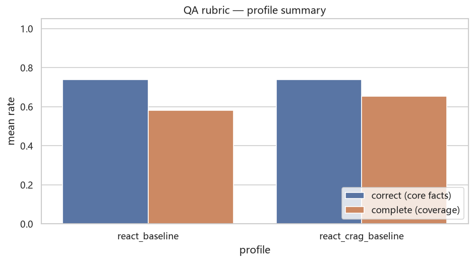
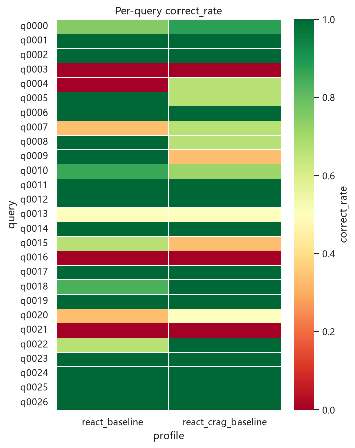
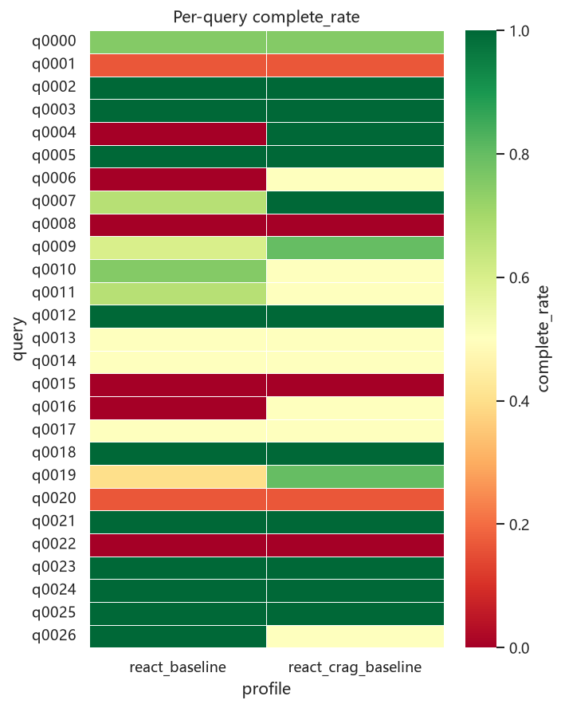
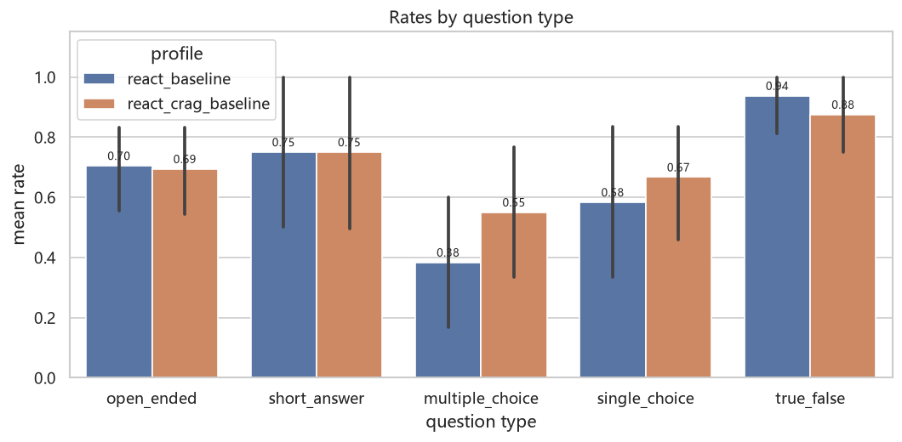
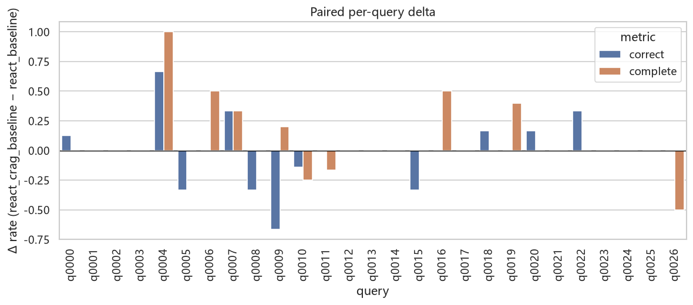
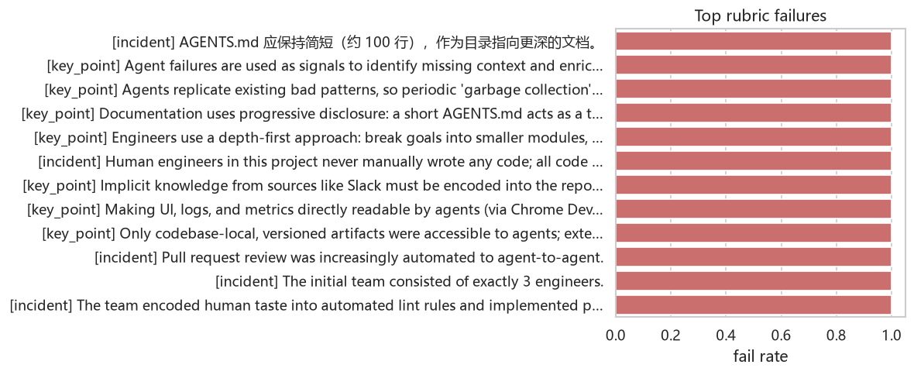

| profile | n | correct_rate | complete_rate |
|---|---|---|---|
| react_baseline | 27 | 0.739 | 0.580 |
| react_crag_baseline | 27 | 0.738 | 0.655 |
| metric | wins | ties | losses | winrate |
|---|---|---|---|---|
| correct_rate | 6 | 16 | 5 | 0.519 |
| complete_rate | 6 | 18 | 3 | 0.556 |





